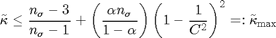
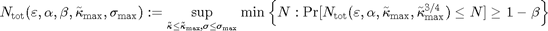
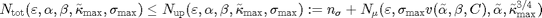
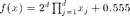

cubMC_g
Monte Carlo method to evaluate a multidimentional integral to within a specified absolute error tolerance with guaranteed confidence level 1-alpha.
Contents
Syntax
[Q,out_param] = cubMC_g(f)
Q = cubMC_g(f,hyperbox,measure,abstol,alpha,n_sigma,fudge,tbudget, nbudget,npcmax,checked)
Q = cubMC_g(f,hyperbox,'measure','uniform','abstol',abstol,'alpha',alpha, 'n_sigma',n_sigma,fudge',fudge,'tbudget',tbudget, 'nbudget',nbudget,'npcmax',npcmax,'checked',checked)
Q = cubMC_g(f,hyperbox,,in_param)
Description
[Q,out_param] = cubMC_g(f,hyperbox) eestimates the integral of f over hyperbox to within an specified absolute error tolerance 1e-2 and with guaranteed confidence level 99%. Input f is a function handle. The function f should accept an n x d matrix input, where d is the dimension of the hyperbox, and n is the number of points being evaluated simultaneously. The input hyperbox is a 2 x d matrix, where the first row corresponds to the lower limits and the second row corresponds to the upper limits.
Q = cubMC_g(f,hyperbox,measure,abstol,alpha,n_sigma,fudge,tbudget, nbudget,npcmax,checked) % estimates the integral of f over hyperbox with respect to a given measure. The answer is given to within an specified absolute error tolerance abstol with guaranteed confidence level 1-alpha. All parameters should be input in the order specified above. If an input is not specified, the default value is used.
Q = cubMC_g(f,hyperbox,'measure','uniform','abstol',abstol,'alpha',alpha, 'n_sigma',n_sigma,fudge',fudge,'tbudget',tbudget,'nbudget',nbudget, 'npcmax',npcmax,'checked',checked) estimates the integral of f over hyperbox to within an specified absolute error tolerance abstol with guaranteed confidence level 1-alpha. All the field-value pairs are optional and can be supplied in different order. If an input is not specified, the default value is used.
Q = cubMC_g(f,hyperbox,in_param) estimates the integral of f over hyperbox to within an specified absolute error tolerance in_param.abstol with guaranteed confidence level 1-in_param.alpha. If a field is not specified, the default value is used.
Input Arguments
- f --- the integrand.
- hyperbox --- the integration hyperbox. The default value is [zeros(1,d); ones(1:d)], the default d is 1.
- in_param.measure --- the measure for generating the random variable, the default is uniform. The other measure we could handle is normal/Gaussian.
- in_param.abstol --- the absolute error tolerance, default value is 1e-2.
- in_param.alpha --- the uncertainty, default value is 1%.
- in_param.n_sigma --- initial sample size for estimating the sample variance, the default value is 1e3.
- in_param.fudge --- the standard deviation inflation factor, the default value is 1.1.
- in_param.tbudget --- the time budget to do the two-stage estimation, the default value is 100 seconds.
- in_param.nbudget --- the sample budget to do the two-stage estimation, the default value is 1e8.
- in_param.npcmax --- number of elements in an array of optimal size to calculate the mean, the default value is 1e6.
- in_param.checked --- the value corresponding to parameter checking status.
0 not checked
1 checked by cubMC_g
2 checked by meanMC_g
Output Arguments
- Q --- the estimated value of the integral.
- out_param.time_n_sigma_predict --- the estimated time to get n_sigma samples of the random variable.
- out_param.n_left_predict --- using the time left to predict the number of samples left.
- out_param.nmax --- the maximum sample budget to estimate the mean, it comes from both the sample budget and the time budget.
- out_param.var --- the sample variance.
- out_param.kurtmax --- the upper bound on modified kurtosis.
- out_param.time --- the time elapsed.
- out_param.n_mu --- the sample size that needed to estimate the mean, which comes from Berry-Esseen inequality and Chebyshev inequality.
- out_param.n --- the total sample size needed to do the two stage esitmation.
- out_param.exit --- the state of program when exiting.
0 Success
1 No enough samples to estimate the mean
2 Initial try out time costs more than
10% of time budget 3 The estimated time for estimating variance
is bigger than half of the time budget10 Hyperbox does not contain numbers
11 Hyperbox not 2 x d
12 Hyperbox is only a point in one direction
13 Hyperbox is infinite when measure is uniform
14 Hyperbox is not doubly infinite when measure
is normalGuarantee
Error guarantee:
Suppose the modified kurtosis, , of the integrand f satisfies the inequality:

where is the number of samples used to estimate the variance of f, C is the standard deviation inflation factor, and is the level of uncertainty. Then the answer is guaranteed to satisfy the inequality:
where is the absolute error tolerance.
Cost upper bound guarantee:
The probabilistic cost of the algorithm, with uncertainty , for integrands of variance no greater than and modified kurtosis no greater than is defined as

The total cost of this two stage algorithm has a probabilistic bound above by
 with level of uncertainty .
Examples
Example 1: Estimate the integral with integrand f(x) = sin(x) in the interval [1;2].
f = @(x) sin(x);interval = [1;2]; Q = cubMC_g(f,interval,'uniform',1e-3)
Q =
0.9563
Example 2: Estimate the integral with integrand f(x) = exp(-x1^2-x2^2) in the hyperbox [0 0;1 1], where x is a vector x = [x1 x2].
f = @(x) exp(-x(:,1).^2-x(:,2).^2);hyperbox = [0 0;1 1];
Q = cubMC_g(f,hyperbox,'uniform',1e-3)
Q =
0.5574
Example 3: Estimate the integral with integrand  in the hyperbox [zeros(1,d);ones(1,d)], where x is a vector x = [x1 x2 ... xd].
d=3;f=@(x) 2^d*prod(x,2)+0.555;hyperbox = [zeros(1,d);ones(1,d)];
Q = cubMC_g(f,hyperbox,'uniform',1e-3)
Q =
1.5553
See Also
References
[1] F. J. Hickernell, L. Jiang, Y. Liu, and A. B. Owen, Guaranteed conservative fixed width confidence intervals via Monte Carlo sampling, Monte Carlo and Quasi-Monte Carlo Methods 2012 (J. Dick, F. Y. Kuo, G. W. Peters, and I. H. Sloan, eds.), Springer-Verlag, Berlin, 2014, to appear, arXiv:1208.4318 [math.ST]
[2] Sou-Cheng T. Choi, Yuhan Ding, Fred J. Hickernell, Lan Jiang, and Yizhi Zhang, "GAIL: Guaranteed Automatic Integration Library (Version 1.3.0)" [MATLAB Software], 2014. Available from http://code.google.com/p/gail/
If you find GAIL helpful in your work, please support us by citing the above paper and software.